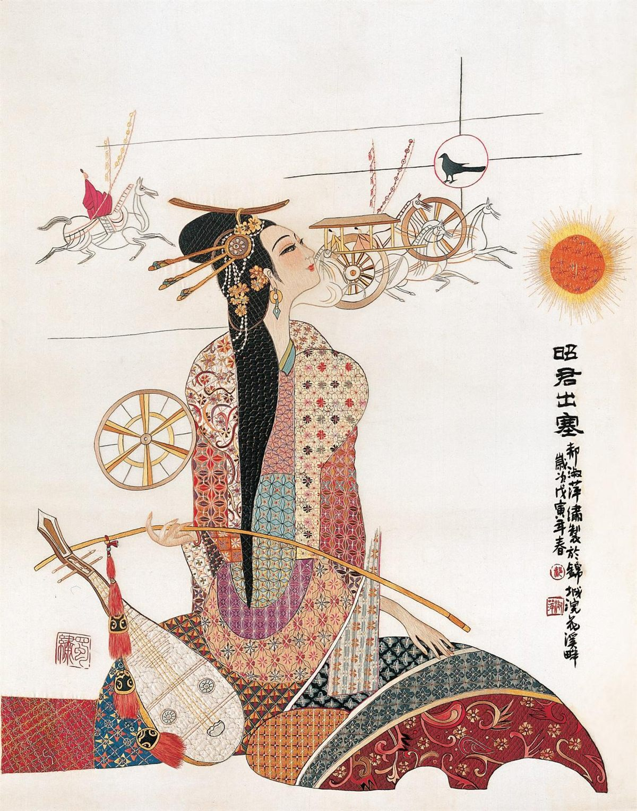
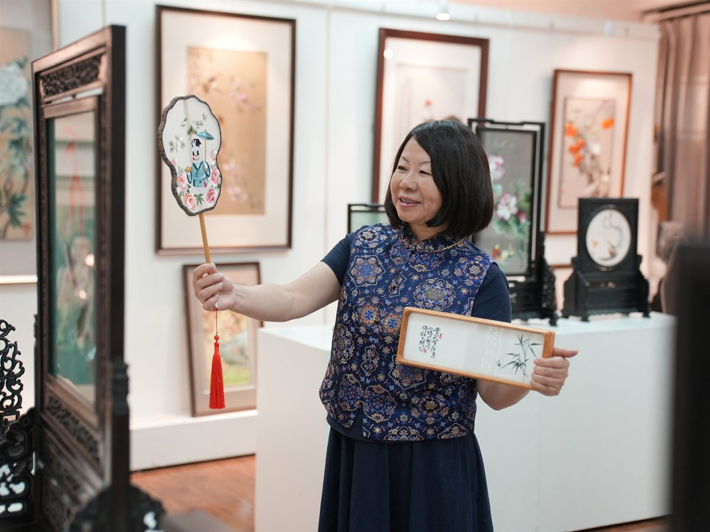

Deep Dive
图文分点详解

01
针法 · 一百二十二种变化
蜀绣针法极为丰富，常用的有晕针、铺针、滚针、截针、掺针、沙针、盖针等。不同针法针对不同质感：晕针表现羽毛的蓬松，滚针勾勒水波与叶脉，铺针则让大块色调平整如画。
- 晕针：层层递进，表现色彩过渡
- 滚针：线条流畅，勾勒轮廓与纹路
- 掺针：混色自然，绣出光影层次

02
题材 · 花鸟虫鱼的温柔
蜀绣题材多取自巴蜀风物：鲤鱼跃浪、芙蓉锦鸡、熊猫竹石、山水楼阁。其中「鲤鱼图」最具代表性——薄如蝉翼的鱼鳍、层层渐变的鳞片，全靠针线「画」出通透的水中光影。
- 鲤鱼图：蜀绣标志性题材，灵动如生
- 芙蓉锦鸡：呼应「蓉城」的市花意象
- 熊猫竹石：现代蜀绣最受欢迎的主题

03
双面绣 · 正反皆成画
双面绣要求在薄透的绸面上正反同时成像，针脚不能打结、线头不能外露。更进一步的「双面三异绣」，正反两面图案、针法、色彩皆不相同，被誉为蜀绣技艺的巅峰。
- 双面绣：正反两面图案一致、无痕无结
- 双面异色绣：正反两色，光影变幻
- 双面三异绣：图案、针法、色彩三异，极难
04
体验与购买 · 走近蜀绣
成都蜀绣博物馆、四川博物院、宽窄巷子及文殊坊的绣品店都能近距离欣赏蜀绣；部分非遗工坊提供刺绣体验课，可在老师指导下亲手绣一枚小扇面或书签。
- 观赏：成都蜀绣博物馆（三圣乡）、四川博物院
- 体验：非遗工坊的蜀绣体验课（约1-2小时）
- 选购：小件绣片、书签、团扇，价格从几十到数百元